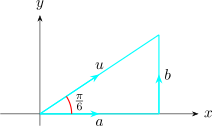

1.3 Directional Derivatives and Gradient Vector
Recall \[f_x(x_0,y_0) = \lim _{h\longrightarrow 0} \frac {f(x_0 + h, y_0) - f(x_0,y_0)}{h}\]
\[f_x(x_0,y_0) = \lim _{h\longrightarrow 0} \frac {f(x_0, y_0 +h) - f(x_0,y_0)}{h}\]
represent the rates of change of \(z\) in the \(x\) and \(y\) directions \((\textbf {i}, \textbf {j})\).
The directional derivatives of \(f\) at \((x_0,y_0)\) in the direction of a unit vector \(u = \langle a, b\rangle = a\,\textbf {i} + b\, \textbf {j}\) is \[D_u\hspace {0.1cm} f(x_0,y_0) = \lim _{h\longrightarrow 0} \frac {f(x_0 + h_a, y_0+h_b) - f(x_0,y_0)}{h}\]
If the function \(f\) is a differentiable function of \(x\) and \(y\), then \(f\) has a directional derivative in the direction of any unit vector \(u = \langle a, b \rangle \) \[D_u\hspace {0.1cm}f(x,y) = f_x(x,y) a + f_y(x,y) b\]
Given \(f(x,y) = x^3 -3xy + 4y^2\), find the directional derivative in the direction of \(\theta = \dfrac {\pi }{6}\) , \(u\) is unit
\(f_x = 3x^2 -3y\) and \(f_y = -3x + 8y\)

\[\sin \frac {\pi }{6} = \frac {b}{1}\hspace {0.5cm}, \hspace {0.5cm} \cos \frac {\pi }{6}= \frac {a}{1}\]
\begin {align*} D_u f(x,y) & = f_x(x,y)\,a + f_y(x,y)\,b\\ & = \big (3x^2 - 3y\big ) \cos \frac {\pi }{6} + \big (-3x + 8y\big ) \sin \frac {\pi }{6} \end {align*}
\begin {align*} D_u (1,2) & = \big (3x^2 - 3y\big ) \frac {\sqrt {3}}{2} + \big (-3x + 8y\big ) \frac {1}{2}\\ & = \frac {13 - 3\sqrt {3}}{2}\\\\ \end {align*}
Gradient Vector
If \(f\) is a function of two variables \(x\) and \(y\), then the gradient vector \(\nabla f\) is defined as \[\nabla f = \frac {\partial f}{\partial x}\,\textbf {i} +\frac {\partial f}{\partial y}\,\textbf {j} = f_x\, \textbf {i} + f_y\,\textbf {j} \]
From theorem 1, the directional derivative can be rewritten as the product of two variables
\begin {align*} D_u\hspace {0.1cm}f(x,y) & = f_x(x,y) a + f_y (x,y) b\\ & = \langle f_x , f_y\rangle \cdot \langle a,b\rangle \\ & = (f_x\,\textbf {i} + f_y\,\textbf {j}) \cdot (a\,\textbf {i} + b\,\textbf {j})\\\\ \implies \hspace {1cm} D_u\hspace {0.1cm}f(x,y) & = \nabla f\cdot \overrightarrow {u}\\\\ \end {align*}
Solution. \begin {align*} \nabla f & = f_x\,\textbf {i} + f_y\, \textbf {j}\\ & = \big (\cos x + ye^{xy}\big )\,\textbf {i} + \big (xe^{xy}\big )\,\textbf {j}\\ & = \langle \cos x + ye^{xy}, xe^{xy}\rangle \\\\ \implies \hspace {1cm} \nabla f (0,1) & = \langle 2,0\rangle \\ \end {align*}
Find the directional derivative of \(f(x,y) = x^2y^3 -4y\) at the point \((2,-1)\) in the direction of the vector \(V = 2\,\textbf {i} + 5\,\textbf {j}\).
Solution. \begin {align*} \nabla f (x,y) & = f_x\,\textbf {i}+ f_y\,\textbf {j}\\ & = 2xy^3\,\textbf {i} + \big (3x^2y^2 -4\big )\,\textbf {j}\\\\ \implies \hspace {1cm} \nabla f (2,-1) & = -4\,\textbf {i}+ 8\,\textbf {j} \end {align*}
\[\overrightarrow {u} = \frac {\overrightarrow {V}}{\big |\overrightarrow {V}\big |} = \frac {2\,\textbf {i} + 5\,\textbf {j}}{\sqrt {29}} = \frac {2}{\sqrt {29}}\,\textbf {i} + \frac {5}{\sqrt {29}}\, \textbf {j}\]
\begin {align*} D_uf(2,-1) & = \nabla f (2,-1)\cdot \overrightarrow {u}\\ & = \big ( - 4\,\textbf {i} + 8\,\textbf {j}\big )\cdot \bigg (\frac {2}{\sqrt {29}}\,\textbf {i} + \frac {5}{\sqrt {29}}\,\textbf {j}\bigg )\\\\ & = \frac {-8}{\sqrt {29}} + \frac {40}{\sqrt {29}}= \frac {32}{\sqrt {29}}\\\\ & = \frac {32\sqrt {29}}{29}\\ \end {align*}
The directional derivative of \(f\) at \((x_0,y_0,z_0)\) in the directional of a unit a vector \(\overrightarrow {u} = \langle a, b, c\rangle \) is \[D_u\hspace {0.1cm}f(x_0,y_0,z_0) = \lim _{h\longrightarrow 0} \frac {f(x_0 + h_a, y_0 + h_b, z_0 + h_c) - f(x_0,y_0,z_0)}{h}\]
Given \(f(x,y,z) = x\sin yz\), find the
- 1.
- the gradient of \(f\)
- 2.
- the directional derivative of \(f\) at \((1,3,0)\) in the direction of \(V = \textbf {i} + 2\textbf {j} -\textbf {k}\)
Solution.
\(\displaystyle {\overrightarrow {u} = \frac {\overrightarrow {V}}{\big |\overrightarrow {V}\big |}=\frac {1}{\sqrt {6}}\big (\textbf {i} + 2\,\textbf {j} - \textbf {k}\big )}\)
\begin {align*} \nabla f & = f_x\,\textbf {i} + f_y\,\textbf {j} + f_z\,\textbf {k}\\\\ & = \big (\sin yz\big )\,\textbf {i} + \big ( xz\cos yz\big )\,\textbf {j} + \big (xy\cos yz\big )\,\textbf {k}\\\\ \implies \hspace {1cm} \nabla f(1,3,0) & = 3\,\textbf {k} \end {align*}
\begin {align*} D_u f(1,3,0) & = \nabla f(1,3,0)\cdot \overrightarrow {u}\\ & = 3\,\textbf {k}\cdot \Big (\frac {1}{\sqrt {6}}\big (\,\textbf {i} + 2\,\textbf {j} - \textbf {k}\big )\Big )\\\\ & = - \sqrt {\dfrac {3}{2}}\\\\ \end {align*}
Questions on this section
Stuck on something here? Ask below and it stays attached to this topic.